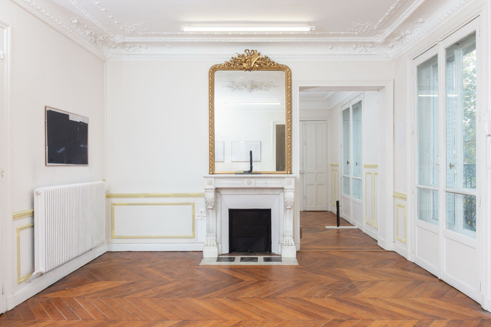
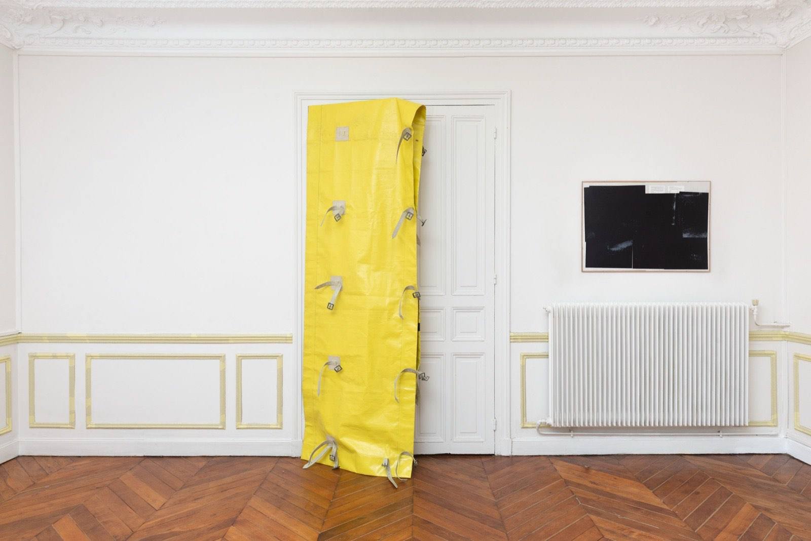
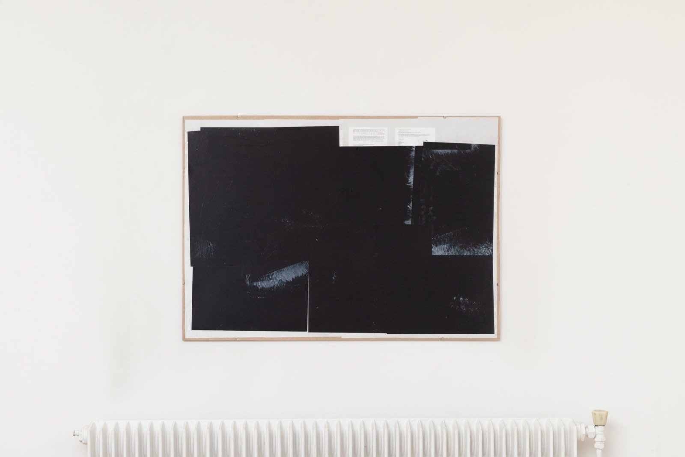
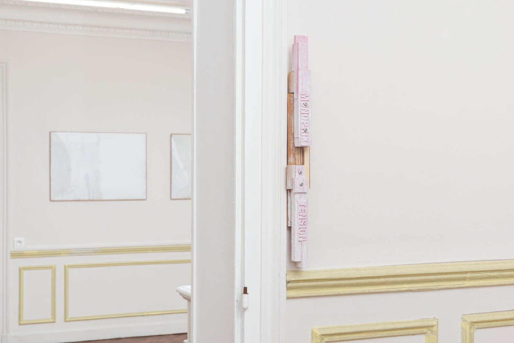
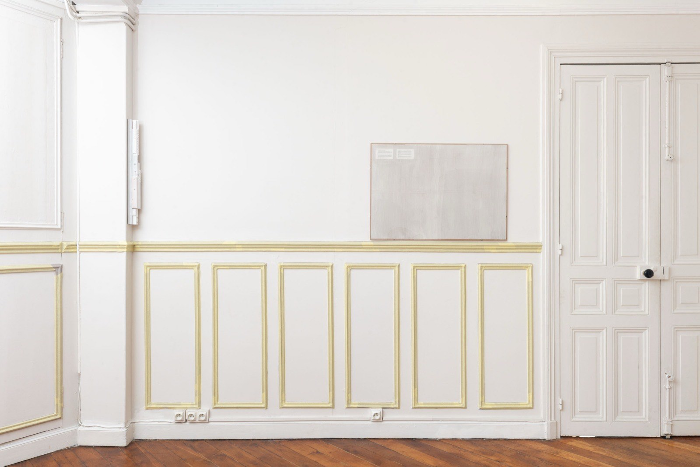
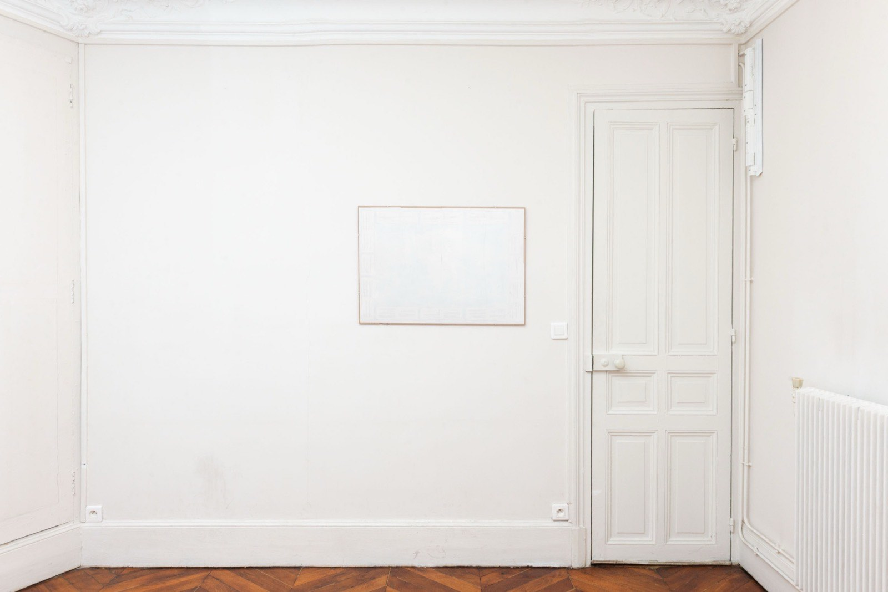

Visitors, Cruelty, Personal Hygiene
KR04 · en cours
Dans la campagne italienne du XVIIe siècle, un paysan de douze ans fait l’expérience de la beauté. Caché dans les fougères, il voit une jeune aristocrate descendre d’un carrosse, soulever ses jupes et s’accroupir en riant pour pisser. Un homme, resté à l’intérieur, la regarde aussi. Dans Le Roi du bois (1996), Pierre Michon décrit ainsi deux expériences du regard : l’une légitime, vulgaire, presque de droit ; l’autre honteuse, perverse et clandestine.
Thigmotaxie est cette tendance qu’ont certains animaux à rechercher le contact des surfaces. Des rampants traversent rapidement les espaces ouverts pour rejoindre les parois, les fentes, les interstices. Ils s’y pressent, s’y empilent les uns contre les autres, dans un besoin viscéral. Leurs antennes leur permettent de suivre les cloisons et de s’orienter dans l’espace, à la manière dont certains amants préfèreront dormir proche du mur pour se sentir rassuré. Il y a une hantise à ne pas voir, mais aussi une excitation à ce que la vue s’arrête. Être si près que l’on tombe dans l’abstraction.
L’enfant accroupi ne voit pas le sexe, il le devine en apercevant le jet de pisse.
Le cafard ne voit pas la pièce, il la projette par son contact avec le mur.
Dans un sous-sol à Berlin il y a quelques années, je discutais avec quelqu’un assis sur une banquette collante en Skaï, coincé entre un mur et un écran de télévision. En face de moi, à contre-jour, une silhouette me regardait depuis l’encadrement d’une porte absente. Une lumière verte venait de derrière lui. Je ne pouvais que distinguer le mouvement lent de sa main branlante et, par intervalles, la braise d’une cigarette rougissant au milieu de son visage absent. Je continuais à parler. Je demeurais en ma sécurité à l’idée de savoir que dans les salles adjacentes, d’autres hommes, tout aussi disponibles, étaient à genoux, collés contre d’autres murs.
La veille du vernissage, revient encore cette réflexion sur la condition du cafard. Que voit-il encore une fois dans les plis, dans le centre ? Variations de lumière, d’opacité, rétention de l’information. Et ce désir viscéral d’être aveuglé par le blanc.
Chez Michon, le petit gardien de porcs déclarait : « J’ai peint pour être prince. » Aujourd’hui, une blatte américaine d’environ 12,5 mm de haut peut traverser une fente de 3 mm, en comprimant son corps de 40 à 60 %.
— Hugo Hectus
In the 17th-century Italian countryside, a twelve-year-old peasant experiences beauty. Hidden in the ferns, he sees a young aristocrat step down from a carriage, lift her skirts and squat down laughing to piss. A man, still in the carriage, watches her too. In Le Roi du bois (1996), Pierre Michon thus describes two experiences of looking: one legitimate, vulgar, almost by right; the other shameful, perverse and clandestine.
Thigmotaxis is the tendency some animals have to seek contact with surfaces. Crawling things, crossing open spaces quickly to reach walls, cracks, interstices. They press in, pile up against one another, out of a visceral need. Their antennae allow them to follow partitions and orient themselves in space, much as some lovers prefer to sleep close to the wall to feel reassured. There is a haunting in not seeing, but also an excitement in where the view stops. To be so close that one falls into abstraction.
The crouching child does not see her sex, he guesses it from the stream of piss.
The cockroach does not see the room, it projects it through its contact with the wall.
A few years ago in a basement in Berlin, I was talking with someone while sitting on a sticky vinyl bench, wedged between a wall and a television screen. Opposite us, backlit, a silhouette was staring at me from the frame of an absent door. A green light came from behind him. I could only make out the slow movement of his jerking hand and, at intervals, the ember of a cigarette reddening in the middle of his absent face. I kept talking. I remained in my safety at the thought that in the adjacent rooms, other men, just as available, were on their knees, pressed against other walls.
The night before the opening, this thought about the condition of the cockroach returns again. What can it still see once inside the folds, in the center? Variations of light, opacity, retention of information. And this visceral desire to be blinded by white.
In Michon, the little swineherd declares: “I painted to be a prince.” Today, an American cockroach approximately 12.5 mm high can pass through a 3 mm gap by compressing its body by 40 to 60%.
— Hugo Hectus
Artistes — 1 entrée
Vues d'installation — 6 entrées

«Visitors, Cruelty, Personal Hygiene», vue d'installation, KRAMER, Paris, 2026. Photo : Mischa Schlegel.

«Visitors, Cruelty, Personal Hygiene», vue d'installation, KRAMER, Paris, 2026. Photo : Mischa Schlegel.

«Visitors, Cruelty, Personal Hygiene», vue d'installation, KRAMER, Paris, 2026. Photo : Mischa Schlegel.

«Visitors, Cruelty, Personal Hygiene», vue d'installation, KRAMER, Paris, 2026. Photo : Mischa Schlegel.

«Visitors, Cruelty, Personal Hygiene», vue d'installation, KRAMER, Paris, 2026. Photo : Mischa Schlegel.

«Visitors, Cruelty, Personal Hygiene», vue d'installation, KRAMER, Paris, 2026. Photo : Mischa Schlegel.